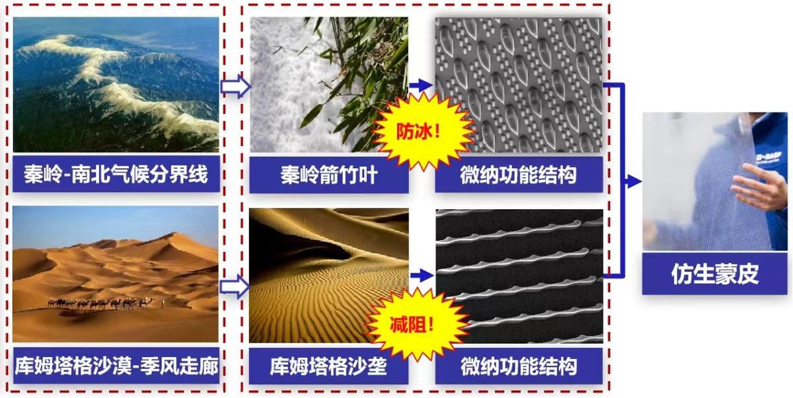
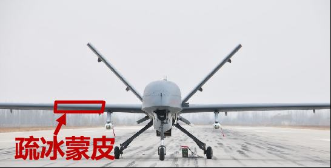
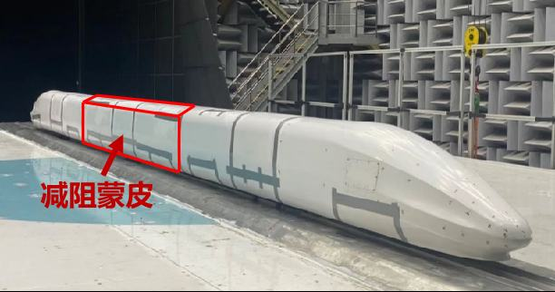

我国飞机、高铁等现代航行器发展迅猛，防冰避难、减阻增效需求迫切。飞机结冰导致空难占比高达35%，恶劣环境的飞机防冰技术是国际难题，也是我国新机研制的瓶颈；大型航行器摩阻占总阻力的40%-80%，一架客机减阻1%每年可节省燃油40万升，一列高铁减阻1%每年可节省用电28万度，经济潜力巨大。仿生微纳结构是微纳设计领域前沿，为创新蒙皮技术，满足防冰减阻迫切需求提供了崭新途径。但其面临仿生与表面工程多学科交叉、跨尺度微纳功能结构设计等技术挑战。项目历经10余年，取得多项原创性成果，形成以下主要创新点：
自主研制的疏冰蒙皮列装我国察打一体化大型无人机“彩虹4”等104架，满足了西藏边防高寒环境安全飞行的急需；减阻蒙皮大幅提升了高速列车CR450、翼身融合民机BWB300的减阻率，为飞机、高铁等提供了全新减阻手段。此外，相应的剪应力传感器还广泛用于“大飞机”、舰载机、航空发动机等摩阻测量。
项目已获授权国家技术发明专利51项，在国际权威专业期刊发表高水平论文80余篇，获省部级技术发明一等奖3项。项目近3年创产值超20亿元，社会和经济效益潜力巨大。
我国飞机、高铁等现代航行器发展迅猛，对长航程、高安全和复杂环境适应性的需求迫切，传统蒙皮技术已经难以满足其对防冰、减阻等发展要求，表面结构与功能一体化的仿生蒙皮为此提供了发展途径。师法自然，仿生微纳结构为表面功能的发展提供了创新源泉。项目组发挥西部地区独特的地理资源优势，受秦岭山箭竹叶防冰雪现象和库姆塔格沙漠气动构型启发，提出疏冰、减阻仿生微纳功能结构，为创新蒙皮技术，提升现代航行器性能提供了崭新途径。
图1 现代航行器防冰减阻需求迫切图2 仿生蒙皮技术为提升现代航行器性能提供了崭新途径创新点一：仿秦岭箭竹叶疏冰微纳结构设计。（该创新点授权国家发明专利28项，发表论文39篇；附件1，4，5，9，31-33）
（1）揭示秦岭箭竹叶疏冰特征，突破仿荷叶超疏水表面“疏水-防冰”机理局限
仿生表面微纳功能结构为防冰研究提供了新的发展方向。以哈佛大学、麻省理工学院等为代表研究的仿荷叶超疏水(superhydrophobic)表面对常温大水滴具有很好的疏水性，利用减少水滴（毫米级）与表面的接触来降低冰成核的原理，进而也能产生一定的“疏水-防冰”效果。然而，“夏草不言冬”，这种超疏水表面难以适应飞行条件下高速过冷微小水滴（微米级）从“冰水”冲击表面迅速相变为“冰”的过程，仅靠超疏水表面良好的疏水性，难以取得理想的防冰效果。
图3 仿荷叶超疏水表面防冰效果不佳项目组深入考察雪莲、冰凌花等过冬草木，比对研究箭竹属、刚竹属、箬竹属等20余耐寒竹种，首次发现在海拔3000米左右的秦岭高山草甸区生长的直接与冰雪相互作用的我国独有植物——秦岭箭竹叶(学名：Fargesia qinlingensis)具有优异的疏冰性能。通过润湿接触角、液滴弹跳行为、冰粘附力等测试，验证了秦岭箭竹叶表面独特的多层不等高微纳结构具有优异的疏冰特征，通过调控冰与表面的粘附力改变冰与表面的“亲疏”实现疏冰(ice-phobic)，进而达到“疏冰-防冰”效果，较之荷叶超疏水表面冰粘附强度降低了45%。
图4 (a)冰雪环境下的秦岭箭竹叶 (b)秦岭箭竹叶表面疏冰微纳结构（2）设计仿秦岭箭竹叶多层不等高微纳结构，建立多尺度过冷水滴疏冰模型
提取秦岭箭竹叶表面微观结构关键特征，综合考虑设计与制造约束条件，设计出仿秦岭箭竹叶多层不等高疏冰微纳结构。这种不同高度且阵列排布的柱状、梭形、乳突状、片状微纳米结构有利于过冷微小水滴弹跳，增强了抗浸润性，并对所形成冰粒的粘附接触面形成应力集中，更易产生微裂纹和扩展，有效降低冰粒与表面间的粘附强度，具有优异的疏冰效果。
图5 仿秦岭箭竹叶多层不等高微纳结构多尺度过冷水滴疏冰模型（3）提出微纳结构分层组装制造方法，攻克多层异构结构制造难题
针对多尺度微纳结构形貌复杂、不等高微纳结构难以加工、柔性材料大幅面制造困难等挑战，基于分层组装思想，开发出跨尺度柔性微纳结构制造工艺，攻克多层不等高复杂形貌微纳结构制造难题，实现仿秦岭箭竹叶疏冰微纳结构制造。
图6 仿秦岭箭竹叶多层不等高微纳结构分层组装制造工艺（4）提出基于压力变化规律的冰况探测控制方法，实现实飞结冰测控
实际飞行环境恶劣多变，疏冰蒙皮需要结合飞行高度、风速等参数进行反馈调节，必须具备结冰实时检测能力，并根据冰况调整控制策略，达到高原环境实战指标要求。项目提出了基于总压静压相对变化规律的多冰况探测方法，有效解决飞行过程中结冰实时探测及防冰控制难题。
图7 (a)基于总压静压相对变化规律的多冰况探测 (b)不同冰况机翼周围压力分布云图（5）批量研制大幅面疏冰蒙皮，国际上首次开展无人机防冰功能飞行试验
批量研制出大幅面疏冰蒙皮3000余幅。实验测得多层不等高微纳结构表面冰粘附强度相对于光滑表面冰粘附强度下降80%，实现“从形似到神似”的突破。冰风洞实验证明了其优异的疏冰性能，能耗降低51%，超过国际先进水平。在国际上首次成功开展高寒条件下无人机防冰功能飞行试验。
图8 大幅面仿生疏冰蒙皮及冰粘附强度测试结果图9 疏冰蒙皮冰风洞实验及无人机防冰功能飞行试验创新点二：仿库姆塔格沙漠减阻微纳结构设计。（该创新点授权国家发明专利23项，登记软件著作权1项，发表论文42篇；附件2-3，6-8，10-11，34-36）
（1）揭示新疆库姆塔格沙漠独特气动减阻特征，突破仿鲨鱼小肋结构风向鲁棒性局限
通过表面微纳结构改变边界层实现气动减阻成为学科前沿热点。以往以美国NASA、德国宇航中心为代表的仿鲨鱼皮减阻研究，借鉴水中减阻提出的小肋气动减阻结构虽取得了可观的效果，但存在风向鲁棒性差等突出问题。
图10 仿鲨鱼皮小肋微结构风向鲁棒性不佳项目组经过大量调研筛选后，发现新疆库姆塔格沙漠和大飞机的雷诺数均为1e8到1e9量级，满足不可压缩黏性流动的相似性分析条件；且具有两个主风向，存在风向摄动，这对于改善小肋结构的风向鲁棒性研究有较大启发，因此可以将其作为大飞机气动减阻研究的模仿对象。
图11 库姆塔格沙漠沙垄构型（2）设计仿库姆塔格沙漠减阻微纳结构，诠释微纳结构近壁涡演变过程
提取库姆塔格沙漠独特舌形和分形特征，设计出仿沙漠减阻微纳结构。建立了微纳结构的多尺度“分层破涡”、双支峰“抬涡稳流”、舌形垄“顺风适流”等减阻解耦模型，诠释了仿库姆塔格沙漠微纳结构的近壁涡演变过程。
图12 仿沙漠减阻微纳结构模型图13 (a)多尺度“分层破涡” (b)双支峰“抬涡稳流” (c)舌形垄“顺风适流”（3）提出掩膜三重光刻工艺，解决多层复合微纳结构精确制造难题
仿库姆塔格沙漠减阻微纳结构是三维的多层复合结构阵列，且结构尺度范围从微米到百微米，传统微纳制造工艺难以实现。项目提出基于异质掩膜的三重光刻工艺，解决了多层复合微纳结构精确制造难题。
图14 基于混合掩膜的三重光刻工艺（4）研发国际首台套流体壁面剪应力测试仪，解决剪应力精确测量难题
流体壁面剪应力是减阻、防冰以及边界层流动状态判定的重要依据。然而，精确测量剪应力一直是国际难题。项目构建出流固界面粘性剪应力的热敏单元本构方程，为蒙皮表面流动状态提供了判定依据。
图15 (a)微纳结构影响边界层流动状态 (b)速度边界层与温度边界层耦合设计柔性热膜剪应力微传感器阵列，提出张紧薄膜光刻和非平坦表面精确成形等制造方法，研制出厚度仅为30μm的曲面保形剪应力传感器，分辨力达0.1Pa，已交付用户1000余套。
图16 张紧薄膜光刻和非平坦表面精确成形制造方法图17 柔性剪应力传感器及其标定曲线建立起空气和水介质的流体壁面剪应力校准装置，研发出国际首台套流体壁面剪应力测试仪，为曲面剪应力分布式测量和边界层状态表征提供崭新手段。
图18 (a)剪应力标定系统及实物图 (b)流体壁面剪应力测试仪（5）构建微纳结构减阻测试风洞，分辨力国际报道最高水平
在国际上率先构建出微纳结构减阻测试风洞及高分辨力剪切力测试系统，风洞剪切力分辨力可达1e-6N，为国际报道最高水平。剪应力测试能谱表征出近壁湍流状态，实验证明了仿沙漠减阻微纳结构的抑涡减阻效能。
图19 微纳结构减阻测量风洞及高分辨力剪切力测试装置图20 (a)光滑表面能量谱 (b)微结构表面能量谱（6）研制大幅面减阻蒙皮，减阻率较国际报道最好水平极大提升
研制出大幅面高风向鲁棒性减阻蒙皮，成功开展风洞试验。实现了高达16.7%的气动减阻率，将以往的减阻风向摄动角度从35°提高到了60°，减阻率较之国际报道的最好水平提高了52%。
图21 大幅面减阻蒙皮图22 减阻效果测试图推广应用情况
项目已推广到30多个国家重点企事业单位，成功应用于多项国家重大专项和重点（型号）工程。
自主研制的仿秦岭箭竹叶微纳结构疏冰蒙皮已成功列装“彩虹4”高原型无人机104架，“成为国际上首款具有防除冰功能的中空长航时无人机”，满足了西藏边防高寒环境无人机安全飞行的急需。
图23 列装高原型无人机气动减阻蒙皮为“新一代”民机、高速列车等提供了全新减阻手段。其中，在高速列车CR450整车风洞实验中，中段车减阻率最高可达11.3%，有望每年能节省100亿度电，显现出巨大的减阻节能潜力。
图24 (a)CR450高铁整车减阻风洞实验 (b) 翼身融合民机BWB300样机减阻飞行试验为奥运自行车赛车提供的轮毂回转式运动减阻蒙皮，解决了变速运动减阻的难题，使赛车轮毂减阻3%，为我国奥运健儿提供了夺标利器。
图25 奥运赛车减阻剪应力传感器已在“大飞机”以及舰载机的气动测量方面得到广泛应用，实现了摩阻分布测量以及分离、转捩等流动状态的实时判定，助力我国系列“大飞机”研制和商业化运营。
图26 C919大型客机、运20大型运输机、J15舰载机摩阻分布测量图27 超临界翼型飞机风洞实验及大迎角分离状态实飞测量中国空气动力与研究发展中心等权威单位测试报告表明，项目相关成果与国际上报道的同类研究相比，超过国际先进水平。项目被列为国家基金委“纳米制造的基础研究”重大研究计划亮点成果。还被人民日报、科技日报等主流媒体报道，产生了广泛的社会影响。项目成果不仅保障了多项国家重点型号工程的完成，并在风力发电、电动汽车、石化管道等领域具有广阔的应用前景，社会和经济效益潜力巨大。项目成果获省部级技术发明一等奖3项。
技术先进性
经与国际上公开发表的数据比较，项目的主要技术指标均优于国内外报道水平，在仿秦岭箭竹叶疏冰微纳结构设计、仿库姆塔格沙漠减阻微纳结构设计等方面研究属于国际首创，如表1所示。
表1 国内外同类技术对比
对比项
国内外
本项目
先进性
仿秦岭箭竹叶
疏冰微纳结构
哈佛大学、麻省理工学院：
仿荷叶防冰微纳结构
首次设计出仿秦岭箭竹叶疏冰微纳结构，较之仿荷叶防冰微纳结构冰粘附强度降低45%
首创
仿库姆塔格沙漠
减阻微纳结构
美国NASA、德国宇航中心：
仿鲨鱼皮减阻微纳结构
首次设计出仿库姆塔格沙漠减阻微纳结构，较之仿鲨鱼皮减阻微纳结构减阻率提高52%
首创
高分辨力微纳减阻风洞测量系统
现有风洞应变式天平测量系统的剪切力分辨力最高为1e-3N
风洞剪切力分辨力达1e-6N，具备多维微气动力测量能力
优于
壁面剪应力传感器
美国Taosystems公司电阻温度系数2850ppm/℃，厚度80μm
电阻温度系数3610ppm/℃，厚度仅为50μm，响应时间1ms，分辨力达0.1Pa
优于



仿生微纳防冰减阻蒙皮,飞机结冰致空难占 35% 的国际难题
仿生表面本身具有微纳结构之美
飞行安全直接关乎生命,减阻节省燃油
客机减阻 1% 年省燃油 40 万升,经济潜力巨大
「向自然学习」的设计哲学代表